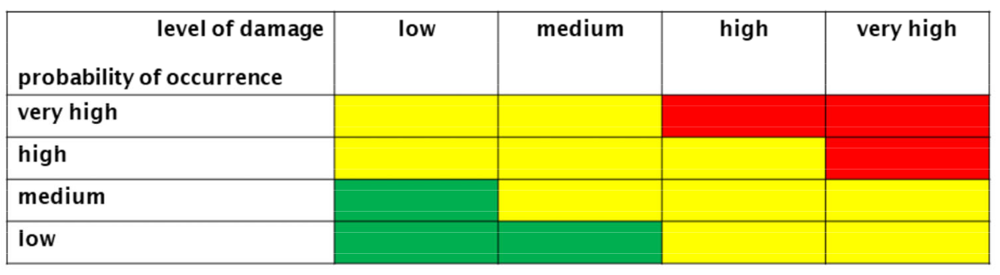
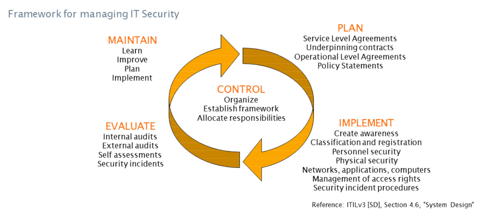
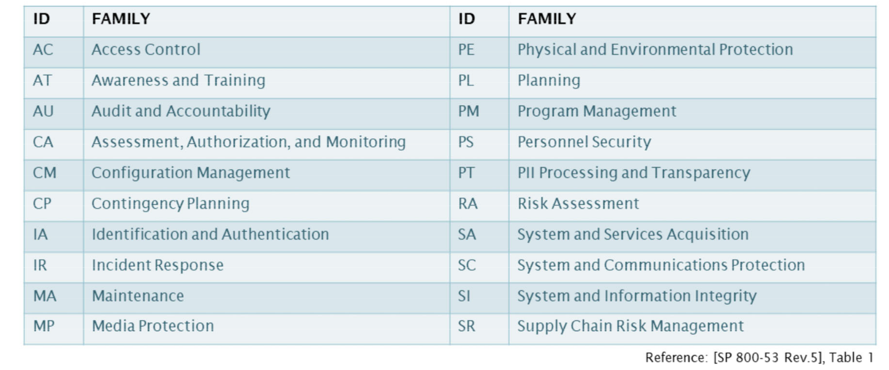
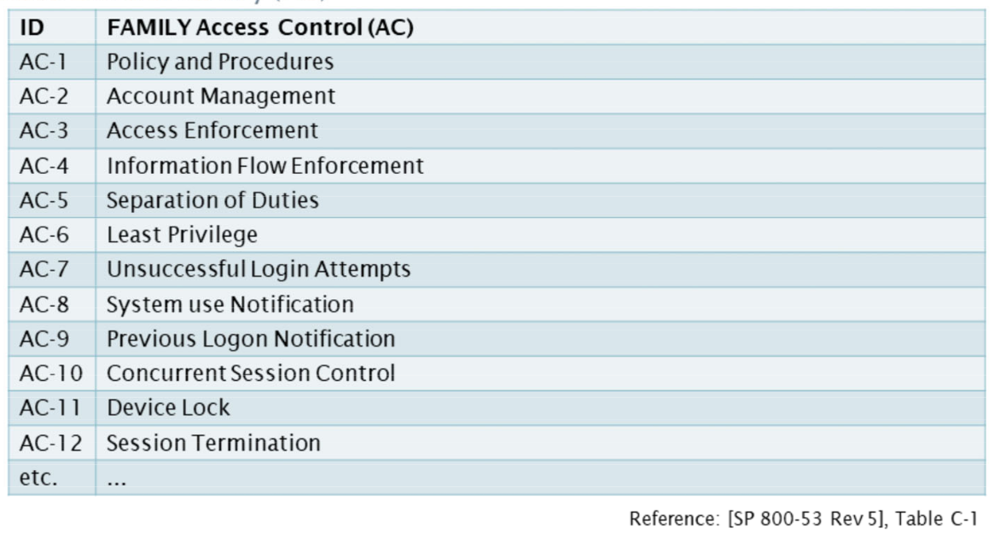
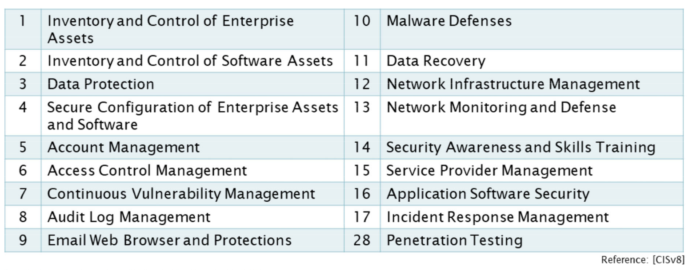
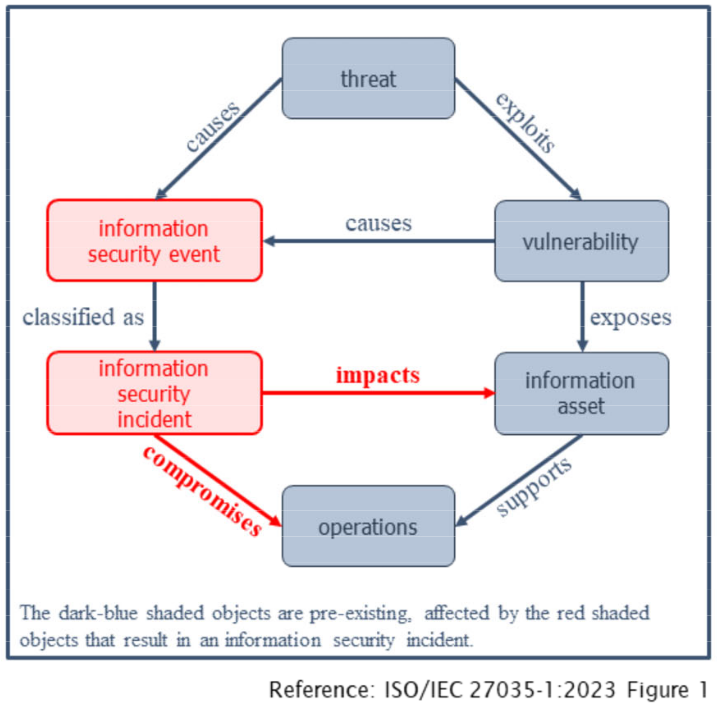
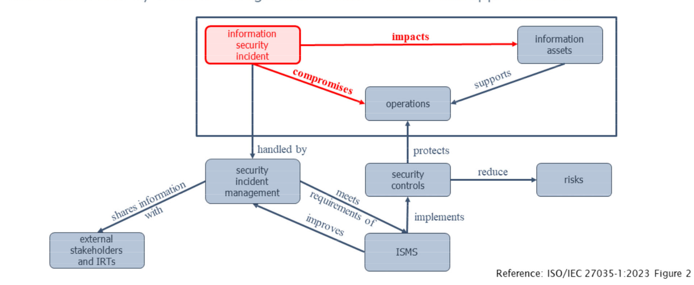

tags: spa isms information-security
Information Security Management
links: SPA TOC - Information Security - Index
Typical approach to manage information security:
- Analyze risks against information assets
- Mitigate these risks by countermeasures (i.e. security controls)
- Reactive plans to minimize damage if a risks turns into a problem
Goals of the Information security management (ISM):
- Align information security with business security
- Ensure that information security is effectively managed In all service (management) activities
Security Framework
A ISM process/framework generally consists of:
- Information Security Policy
- Information Security Management System
- Security strategy
- Security organizational structure
- Set of security controls
- Risk management
- Process monitoring
- Communication strategy/plan
- Training
Risk Managements
Analyzing risks against information assets is the basis of an information security risk management (One of the standards = ISO/IEC 27005 Information Security Risk Management)
A simple approach can be the “traffic light” matrix:

Each risk can be categorized using this matrix. Measures must be taken to at least mitigate the red risks.
Handling Risks
There exist four options to manage risks:
- Risk avoidance
- Change of the situation to avoid the risk
- Done during development of new services/processes
- Very cost intensive
- Risk modification
- Minimize the probability of occurrence and/or level of damage
- Sharing the responsibility
- Close insurance policy or outsource service
- Risk acceptance
- Accept and live with the risk and accept the potential damage
Information Security Policy
Should cover all areas of security and should include (according to ITILv3):
- Overall Information Security policy
- IT assets policy
- Access control policy
- Password control policy
- E-mail (use) policy
- Internet (use) policy
- Anti-virus policy
- Information classification policy
- Document classification policy
- Remote access policy
- Supplier access policy (to IT services, information and components)
- Asset disposal policy
Information Security Management System
The Information Security Management System (ISMS) is the basis for the development of the information security program. It supports the business objectives.
Involves the 4 Ps:
- People
- Process
- Products and technology
- Partners and suppliers
ISMS lifecycle according to ITIL:

Seven steps to implement an ISMS:
- Secure executive support and set the objectives
- Define the scope of the system
- Evaluate assets and analyze the risk
- Define the Information Security Management System
- Train and build competencies for the Roles
- System maintenance and monitoring
- Certification audit
Certification of the ISMS
- An ISMS can archive an certification
- Most common in Switzerland is the certification against ISO/IEC 27001
- ISO/IEC 27001 is the certification standard and belongs to the ISO/IEC 27000-series, which is a series of information security standards. Only 27001 can be certified
- Contains best practice recommendations to maintain an ISMS
- The series consists of many standards over 30 standards are bundled under its name
Security Controls
Security professionals (us) have to…
- understand the requirements of business (for information asset protection)
- understand the risk for a particular information asset
- devise and understand the countermeasures for risks
To protect information assets we have to implement security controls
Security control families according to NIST:

Example Access Control Family (AC):

NSA recommendations:
3 controls have a special value for immediate implementation for organizations that have not yet implemented complete defenses:
- Malware Defenses
- Data Recovery Capability
- Security Skills Assessment and Appropriate Training to fill gaps
Center of Internet Security CIS
CIS is a non-profit to safeguard private and public organizations against cyber threats.
CIS provides:
- Cybersecurity Best Practices
- Cybersecurity Tools
- Cybersecurity Threats
- Controls to protect organizations from known cyber-attack vectors
The five critical tenets of an effective cyber defense system:
- Offense informs defense
- Prioritization
- Measurements and Metrics
- Continuous diagnostics and mitigation
- Automation
CIS Controls:

Security Incident Management
Terms and definitions (ISO/IEC)
- Incident response team (IRT)
- Team that handles incidents
- Information security event
- A possible breach of information security or failure of controls
- Information security incident
- Identified information security events that can harm an assets or compromise operations
- Information security incident management
- Consistent and effective approach in handling information security incidents
- Incident handling
- Detecting, reporting, assessing, responding, dealing with and learning from information security incidents
- Incident response
- Actions taken to mitigate or resolve an information security incident.
Overview

Objectives
- Avoid or contain the impact of information security incidents (Minimize damage)
- Information security events are detected and dealt with
- Information security incidents are assessed and responded
- The effects of information security incidents are minimized
- An escalation process to crisis management and business continuity management is established
- Information security vulnerabilities are assessed and dealt with
- Lessons are learnt
Benefits
- Improving overall information security
- reducing business impacts
- Streangthening focus on information security incident prevention
- Improving priorization
- Supporting evidence collection/investigation
- Improving updates to information security risk assessment
- providing information security awareness
- Providing input to the information security policy
Phases
The phases are like a cycle.
- Plan and prepare
- Information security incident management policy
- Information security policies (related to risk management)
- On corporate, system, service and network levels
- Information security incident management plan
- Incident response team IRT establishment
- Awareness briefings and training
- Detect and report
- Collecting awareness information (Local environment, external data sources and news feeds)
- Monitoring
- Detection and alerting of anomalous, suspicious or malicious activities
- Collection of information security event reports
- Assess and decide
- Respond
- Determine if information security incidents are under control by investigation
- Containment and eradication of Information security incidents
- Recovery from incidents
- Resolution and closure
- Further investigation if required
- Learn lessons
- Identification of lessons learnt and improvements to information security (risk assessment/management plan)
Examples Information security incidents
- Attacks
- DoS or DDos
- Unauthorized access
- Malware
- Abuse
- Violation of information system security policies
- Information gathering
- Identifying of potential targets
- understanding services running on targets
- Confidentiality incidents
- Information leaks have immediate effects on an organization
- Makes information available for unauthorized entities
- Integrity Incidents
- Should be detected and corrected before publishing
- Availability incidents
- Unavailability of information could create effects on e.g SLAs
- Access Control incident
- Unauthorized access = system compromise
- Can lead to theft of resources or information breaches
- Vulnerabilities
- Unpatched servers or software
- May allow successful exploitation
- Technical failures
- Can lead to vulnerabilities
- Theft or loss of equipment
- Those containing information should be considered as availability and or confidentiality incidents
Connection to ISMS

links: SPA TOC - Information Security - Index